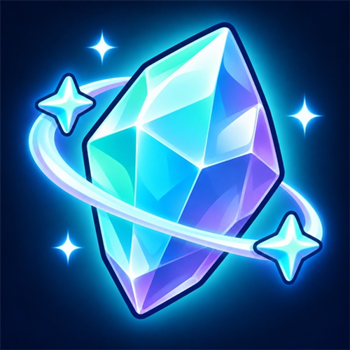

Тапай и улучшай
Накапливай ресурсы и покупай улучшения для дальнейшего развития.
От первого тапа — к своей космической станции. Добывай ресурсы, покупай улучшения и открывай новые возможности.
Скачать в RuStore
Накапливай ресурсы и покупай улучшения для дальнейшего развития.
Развивай станции, получай достижения и проходи этапы престижа и вознесения.
Получай офлайн-доход и продолжай путь после перерыва.